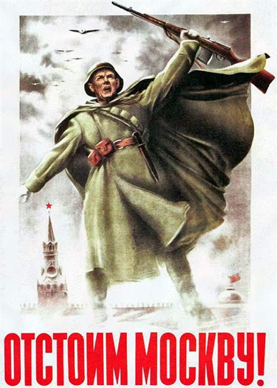

Оглавление
Моско́вская би́тва — стратегическое сражение в Великой Отечественной войне, продолжавшееся с 30 сентября 1941 по 20 апреля 1942 года на московском направлении.
Битва под Москвой включает в себя два периода: оборонительный — с 30 сентября по 5 декабря 1941 года, и наступательный, который состоит из 2-х этапов: контрнаступление — с 6 декабря 1941 года по 7 января 1942 года, и общее наступление советских войск — с 8 января по 20 апреля 1942 года.
Московская битва, включавшая в себя сложный комплекс различных по характеру боев и операций, развернулась на территории центрального участка советско-германского фронта, границы которого на севере проходили по реке Волге, от Калязина до Ржева, на западе — по рокадной железнодорожной линии Ржев — Вязьма — Брянск (до Дятькова), на юге — по условной линии Ряжск — Горбачево — Дятьково.
С обеих сторон в ней одновременно участвовало более 2 млн. человек, около 2,5 тысяч танков, 1,8 тысячи самолетов, свыше 25 тысяч орудий и минометов. Битва под Москвой состояла из двух периодов — оборонительного и наступательного.
По замыслу операции «Тайфун» город Москва должен быть окружен. Против советских войск в составе Западного фронта (генерал-полковник И. С. Конев, с 10 октября — генерал армии Г. К. Жуков), Резервного фронта (С.М. Буденный), Брянского фронта (генерал-полковник А.И. Еременко, с октября — генерал-майор Г.Ф. Захаров), действовавших на московском направлении, немецкое командование сосредоточило более чем миллионную армию группы «Центр» (генерал-фельдмаршал Т. фон Бок).
В двухмесячных оборонительных боях советские войска сумели обескровить противника. Особенно тяжелые бои шли на волоколамском и можайском направлениях, представлявших кратчайшие пути к Москве. К началу декабря немецкие войска были остановлены на рубеже южнее Волжского водохранилища, Дмитров, Яхрома, Красная Поляна (в 27 км от Москвы), восточнее Истры, западнее Кубинки, Наро-Фоминск, западнее Серпухова, восточнее Алексина, Тулы.
5-6 декабря войска части Красной Армии нанесли контрудар по передовым группировкам немецко-фашистских войск севернее и южнее столицы. Наступление войск Калининского фронта (И.С. Конев), Западного фронта, Брянского фронта развернулось на полосе 1000 км, от Калинина до Ельца. Советские войска наступали на равного по численности противника. За первые три дня они продвинулись на 30-40 км. Противник держался стойко, но сказывалась неподготовленность к ведению военных действий в зимних условиях, недостаток резервов. А. Гитлер, подписав в декабре директиву о переходе на советско-германском фронте к обороне, свалил неудачи на военное командование и, отстранив от занимаемых должностей часть высших генералов армии, принял верховное командование на себя. Но это не привело к существенным изменениям. 7-10 января 1942 года было развернуто общее наступление на всем центральном участке советско-германского фронта.
В январе-апреле 1942 года войска левого крыла Северо-Западного (генерал-лейтенант П.А. Курочкин), Калининского, Западного, Брянского (генерал-полковник Я.Т. Черевиченко) фронтов нанесли поражение противнику и отбросили его на 100-250 км. Советские войска освободили Калинин и Калугу, непосредственная угроза Москве была устранена. В Московской битве впервые в ходе войны была одержана крупная победа над немецкой армией, означавшая полный крах плана «молниеносной войны».
В ознаменование победы советских войск под Москвой Президиум Верховного Совета СССР Указом от 1.05.1944 года учредил медаль «За оборону Москвы».
